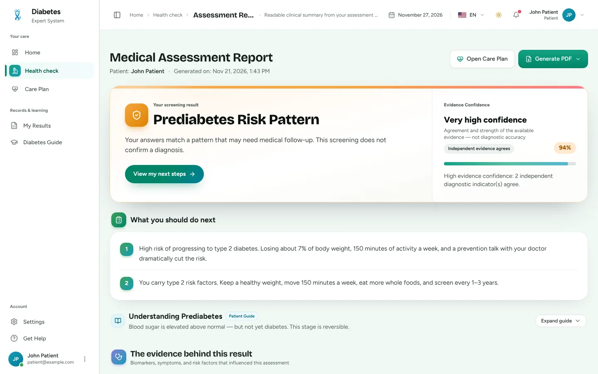

Diabetes Expert System
ប្រព័ន្ធជំនាញទឹកនោមផ្អែម
Early diabetes screening that explains its answer.
Award winner 2026AI Expert System and Innovation


Screening resultPrediabetes risk pattern
94%
Fasting glucose 112 mg/dL, above normal
HbA1c 6.0%, in the prediabetes range